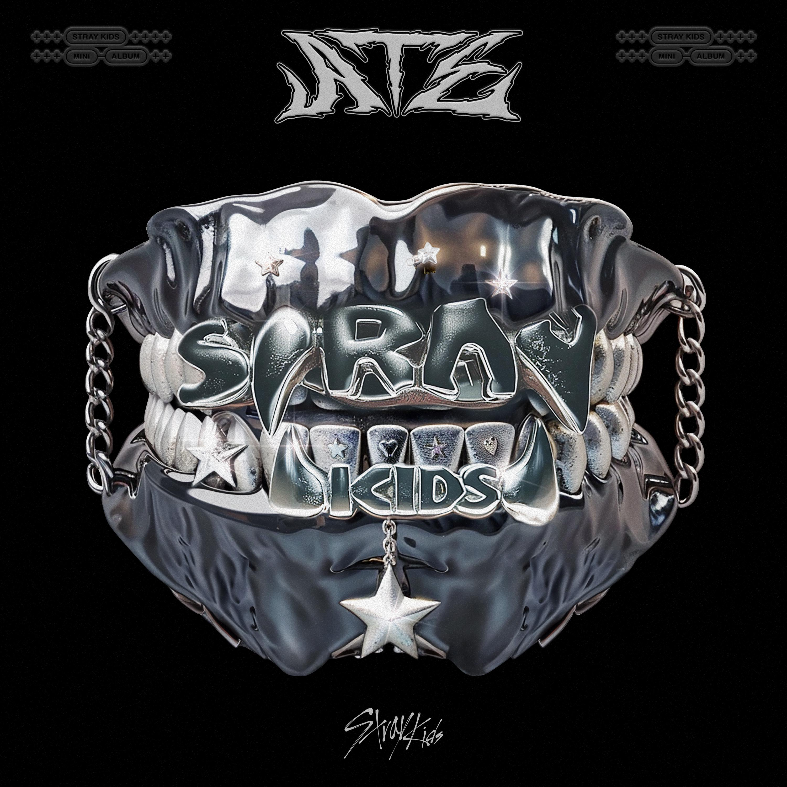

Stray Kids

Me encanta Stray Kids por su sonido experimental y composiciones pensadas a partir de conceptos. En una metáfora propuesta por el mismo grupo, su música se puede describir como un platillo adictivo, donde los sabores se fusionan y satisfacen las papilas gustativas. Cada elemento se combina en texturas, contrastes y niveles de picor y acidez equilibrados, representados en voces y melodías innovadoras y atrayentes.
Recomendaciones
The Tortoise and the Hare
Género: Hip-hop experimental
Chk Chk Boom
Género: Hip-hop reggaeton